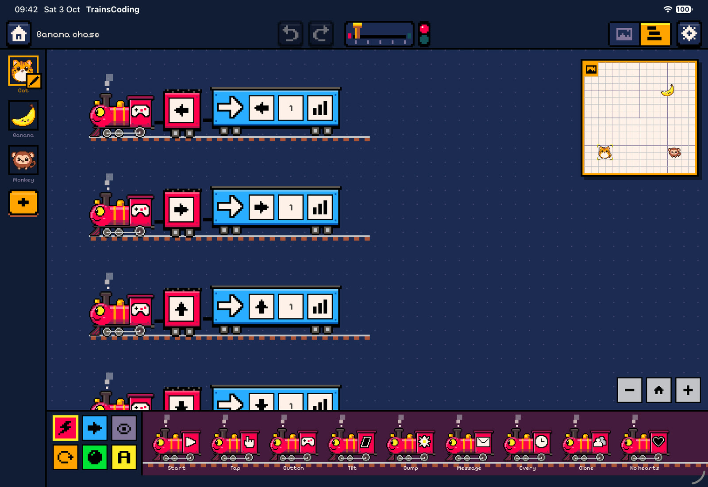
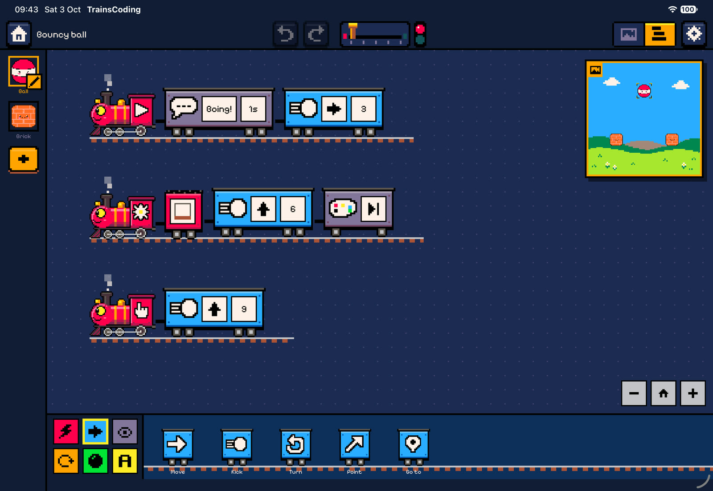
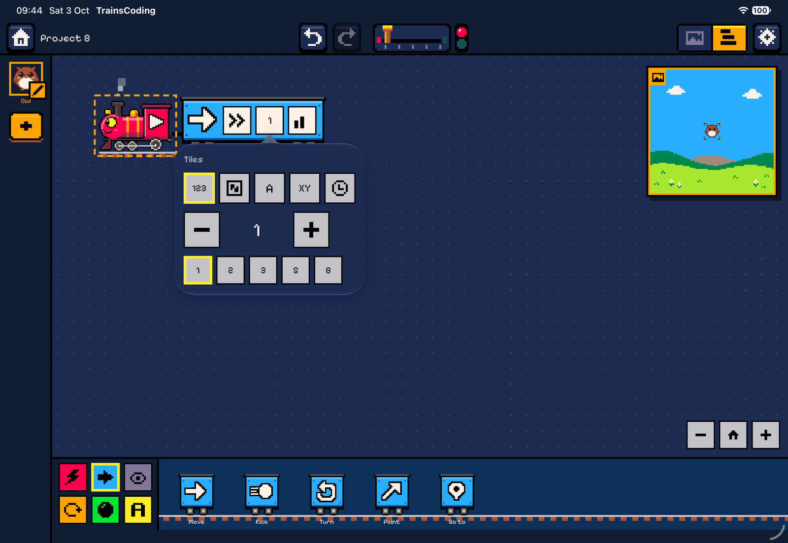
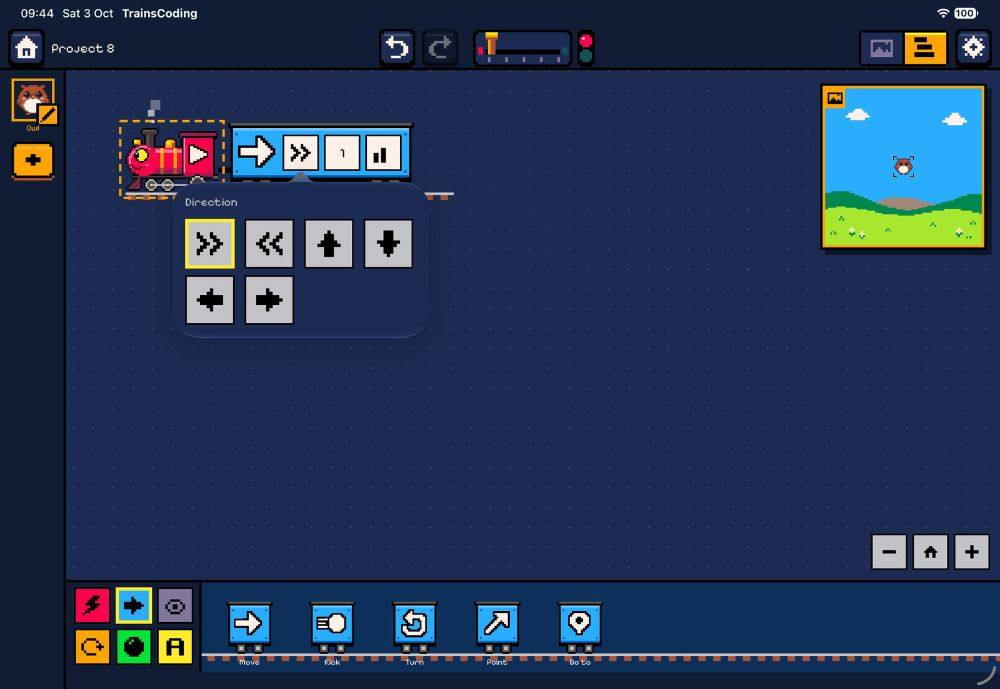

Code editor
Building trains
The code editor is a rail yard. Each train is parked on its own rail, the locomotive on the left facing left, and the wagons coupled behind it to the right. This page covers how to build, change and read trains.

Anatomy of a train
- The locomotive is the event that starts the train. Its cab carries the event’s icon. When the event has parameters (which key, which colour, how many seconds), they ride on the tender behind the cab as plates.
- Wagons are boxcars in their category’s colour with a white icon painted on the side. A wagon stretches to fit its parameter plates.
- The train reads left to right: the wagon right behind the tender runs first.
- Trains never drive anywhere. They stay parked, and only the steam moves. While the program runs, the wagon that is working lights up with a pulsing border, and the locomotive puffs harder.
Each character has its own trains. The editor shows the trains of the character selected in the dock. A character can have as many trains as you like. They all run side by side, so one character can walk, talk and listen for bumps at the same time.
Nesting: repeat, forever and if
Three wagons are containers: Repeat, Forever and If. The wagons they own run on a lower siding right after the container wagon, under a canopy in the container’s colour that ends in a post. After the siding, the train carries on along the main rail.
- An empty container shows a dashed slot to drop wagons into.
- An If wagon has an else plate. Switch it on to get a second branch. The two branches are separated by a sign post reading “else”. You can also add or remove the else branch from the wagon’s menu.
- Containers can be nested inside each other as deeply as you like.
If touching the banana, say Yum, else take a step


The depot (palette)
Along the bottom of the editor is the depot. On the left are six colour-coded category tabs. To the right, the chosen category’s locomotives or wagons are parked on a siding that scrolls sideways.
| Tab | Colour | Contains |
|---|---|---|
| Locomotives | red | The 9 events that start a train |
| Motion | blue | Move, Kick, Turn, Point, Go to |
| Looks | lavender | Say, Costume, Colour, Size, Fade, Pen down, Pen up, Clear pen |
 Control Control | orange | Wait, Repeat, Forever, If, Wait until, Send, Clone, Remove, Win, Lose |
 Physics Physics | green | Gravity, Body, Mass, Magnet, Stick, Drag |
 Data Data | yellow | Set, Change, Hearts, Show variable |

There are two ways to use the depot:
- Tap a locomotive to start a new train. It is placed near the top-left of the visible canvas, below any trains already there. Tap a wagon to couple it to the end of the selected train (or of the last train, or of a new When ▶ is pressed train if the character has none).
- Lift a wagon up out of the depot and drag it to exactly where you want it. A sideways drag scrolls the depot instead, so you must move upwards first.
Drag and drop
Dropping wagons
While you drag a wagon over the canvas, the editor looks for the nearest insertion point on any of the character’s tracks, including container sidings. A gap opens there to preview where the wagon will land. Let go and it couples in with a clack. The train you drop onto becomes the selected train.
Taking wagons off
Dragging a wagon that is already on a train takes it and everything coupled behind it, as with real wagons. This lets you move the tail of a train in one gesture, or split a train in two. If you only want to remove one wagon from the middle, use its menu and choose Delete.
A dragged stack cannot be dropped into itself (for example, a repeat into its own siding).
Deleting
While you drag, a buffer stop (the trash) appears on the canvas. Dropping a wagon stack or a whole train on it, or back on the depot, deletes it. Dropping a dragged wagon stack on an empty part of the canvas, away from any track, also takes it off. Dropping a new wagon from the depot onto empty canvas puts it back with no change.
Moving trains
Drag a locomotive to move its whole train anywhere on the canvas. Dropping a locomotive from the depot onto the canvas creates a new train at that spot.
Feedback. Every pick-up, drop and deletion has its own chiptune sound effect. On iPad you also feel a light haptic when you pick something up, hover over a new drop spot, and land.
Menus
Long-press (iPad) or right-click (Mac) for a menu:
- On a locomotive: Duplicate copies the whole train, slightly offset. Delete removes the train.
- On a wagon: Duplicate inserts a copy right after it (containers are copied with their contents). Delete removes only this wagon and what it contains. On an If, there is also an item to add or remove the else branch.
Parameters
Parameters are shown as plates on the wagon (or on the locomotive’s tender). Tap a plate to open a compact popover. Choices that pick one thing close as soon as you pick. Every parameter starts with a sensible default, and nothing is random unless you choose Random.


| Plate kind | Editor |
|---|---|
| Number | Big − / + buttons that step by the parameter’s step (e.g. 15° for angles, 0.5 s for waits), plus a row of common values: tiles 1, 2, 3, 5, 8 · degrees 15, 45, 90, 180, 270 · seconds 0.5, 1, 2, 5, 10 · percent 25, 50, 100, 150, 200. Literal numbers are kept inside the parameter’s range. |
| Option | A grid of tiles, with icons wherever one reads better than a word: arrows for directions, a dial for speeds, and so on. |
| Text | A text field (Say: up to 40 characters). |
| Target | The project’s characters, any character, and, where allowed, walls or a single wall (left, right, top, bottom). |
| Costume | The costume grid. |
| Colour | Swatches of the app’s 32-colour palette (the pen colour). |
| Variable | The four tiles A, B, C, D. |
| Condition | The condition editor, see below. |
Some plates appear only when they matter. Point shows an angle plate in angle mode and a target plate in toward mode. Go to shows x and y for tile, nothing for random, and a target for character.
Values
Any number plate can take its number from one of five sources:
| Source | Meaning |
|---|---|
123 Number | A fixed number. This is the default everywhere. |
| 🎲 Random | A random whole number between a minimum and a maximum, both included. A new number is drawn every time the wagon reads it, so a Wait random 1–3 in a loop waits a different time on each pass. |
A Variable | The current value of variable A, B, C or D. Variables are shared by all characters and start at 0 on every run. |
XY Property | A property of the character running the wagon: x or y (in tiles), angle (degrees), size (percent) or hearts. |
| ⏱ Timer | Seconds since ▶ was pressed. |
Example. The Pen spiral sample moves A tiles while adding 0.1 to A on every pass, so each step is a little longer than the last.
Conditions
If and Wait until carry a condition. The condition editor offers three kinds, and a not switch that flips the answer:
- Compare two values with
<≤=≠≥>. Both sides can be any value source, e.g. A ≥ 5 or x > random 3–12. Numbers closer than one millionth count as equal, so 0.1 + 0.2 = 0.3 holds. - Touching a character, any character, the walls or one wall.
- Button held: a gamepad button (← → ↑ ↓ A B) is being held down right now.
A new If or Wait until starts with a condition that is always true (1 = 1). Switching the kind starts from a useful example: A > 0, touching any, or button A held.
Moving around the canvas
- Pan by dragging empty canvas (iPad), or by scrolling with a trackpad (Mac).
- Zoom from 40 % to 200 %: pinch on iPad or a trackpad, ⌘-scroll or a mouse wheel on Mac, or use the − and + buttons in the corner.
- The home button between them (“Show all”) goes back to 100 % with the top-left train in view.
Old layouts. If a project’s trains overlap when it opens (projects laid out for the old vertical trains can), the editor re-stacks each character’s trains into rows, keeping their reading order. This is one undo step.
Undo and autosave
Every change to a program goes through one path in the workspace model, so each gesture is exactly one undo step: a drop, a deletion, a parameter change, a duplicated train. Up to 100 steps are kept. Changes are ignored while a program runs, so a run can never edit the code. The project is saved about a second after the last change and again just before each run.